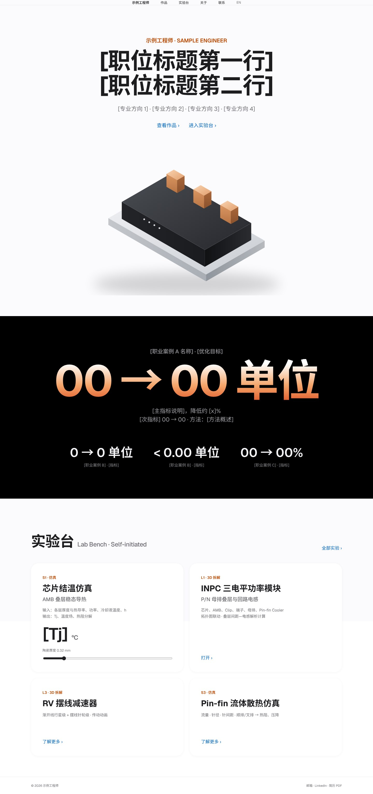
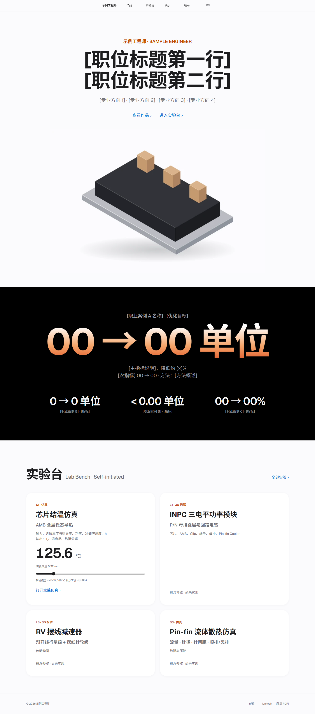
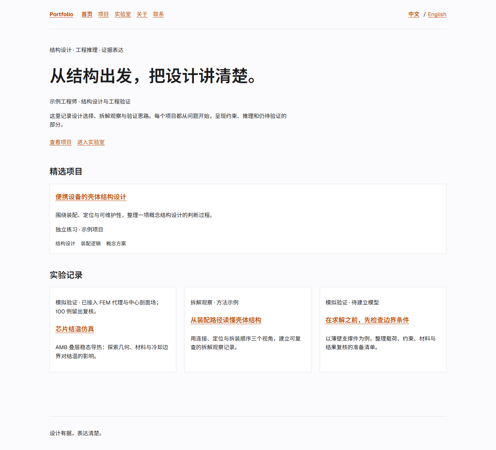

v3 · D1 设计对照
主线 v3 · D1 设计对照
16 个实现状态：首页 / S1 × 中文 / 英文 × 桌面 1440 / 手机 390 × 浅色 / 深色。原始示意稿只有中文浅色；英文与深色沿用同一结构和令牌。S1 的布局按本次明确要求采用顶部测量栏与左右双栏，原始 S1 示意稿用于视觉样式参考。
左：原始示意稿；中：v3 实现；右：修改前 v2。图片可点击查看原始分辨率。本页仅用于离线查看截图，不运行仿真。
原始示意稿D1-desktop · 中文浅色
v3 实现home · zh · 1440 · light
修改前 v2同一页面、语言、宽度与主题